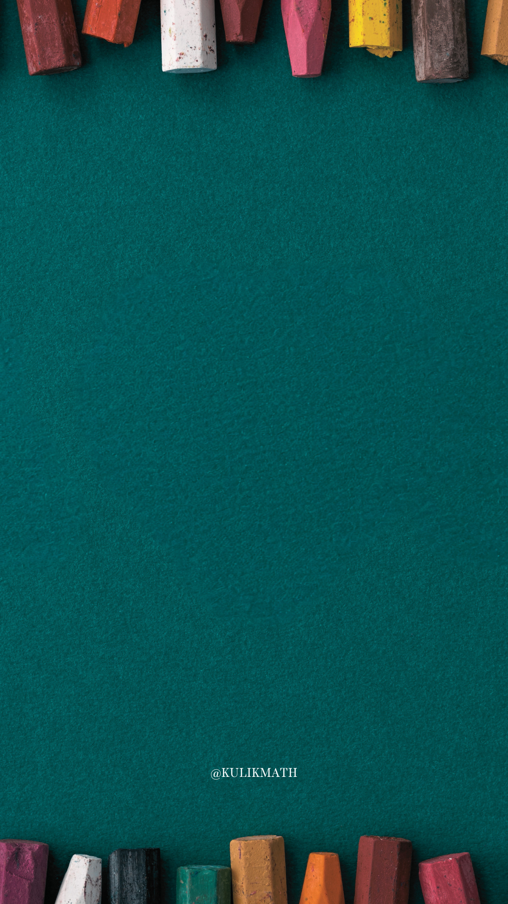

Editor Post 1080 × 1920
Gambar latar
Bawaan: file
KulikMath.png
di folder yang sama. Jika ekspor PNG gagal, pilih gambarnya lewat tombol ini.
Teks. Rumus inline
$...$
, display
$$...$$
. Awali baris dengan
#
untuk judul.
# Teorema Pythagoras Pada segitiga siku-siku $ABC$ dengan siku-siku di $B$, berlaku: $$AC^2 = AB^2 + BC^2$$ Jika $AB = 12$ dan $BC = 9$, maka $$AC = \sqrt{12^2 + 9^2} = \sqrt{225} = 15$$
Ukuran huruf:
44
px
Warna
Judul
Teks dan rumus
Perataan
Judul
Kiri
Tengah
Teks
Kiri
Tengah
Kanan
Rata kiri-kanan
Geometri
Kiri
Tengah
Sesuai posisi di kode
Font teks dan label geometri (rumus tetap memakai font KaTeX)
Poppins
Plus Jakarta Sans
Montserrat
Inter
Rubik
DM Sans
Outfit
Figtree
IBM Plex Sans
Space Grotesk
Nunito
Quicksand
Fredoka
STIX Two Text
Lora
EB Garamond
Crimson Pro
Merriweather
Playfair Display
Roboto Slab
JetBrains Mono
Caveat
Kalam
Patrick Hand
Bayangan (agar lebih kontras)
Teks
Rumus (LaTeX)
Gambar geometri
Blur:
6
px
Jarak:
4
px
Kepekatan:
65
%
Warna
Tampilkan gambar geometri
Geometri di atas teks
Tinggi area geometri:
460
px (lebar tetap 900)
Kode geometri (JavaScript; objek
geo
sudah tersedia, sumbu Y mengarah ke atas)
const A = [100, 40], B = [580, 40], C = [580, 400]; const putih = '#fff'; geo.buatSegitiga(A, B, C, { stroke: putih, strokeWidth: 4, fill: 'rgba(255,255,255,0.12)' }); geo.buatSiku(A, B, C, { stroke: putih, strokeWidth: 3, size: 28 }); geo.buatTitik(A, { label: 'A', labelPosition: 'bottom-left', color: putih, fontSize: '36px', labelDistance: 14 }); geo.buatTitik(B, { label: 'B', labelPosition: 'bottom-right', color: putih, fontSize: '36px', labelDistance: 14 }); geo.buatTitik(C, { label: 'C', labelPosition: 'top-right', color: putih, fontSize: '36px', labelDistance: 14 }); const pusat = [420, 160]; geo.buatLabelSisi(A, B, '12', { pusat, color: '#ffe082', fontSize: '34px', jarak: 28 }); geo.buatLabelSisi(B, C, '9', { pusat, color: '#ffe082', fontSize: '34px', jarak: 28 }); geo.buatLabelSisi(A, C, '15', { pusat, color: '#ffe082', fontSize: '34px', jarak: 28 });
Unduh Post PNG
Unduh Post SVG
PNG Geometri
SVG Geometri
